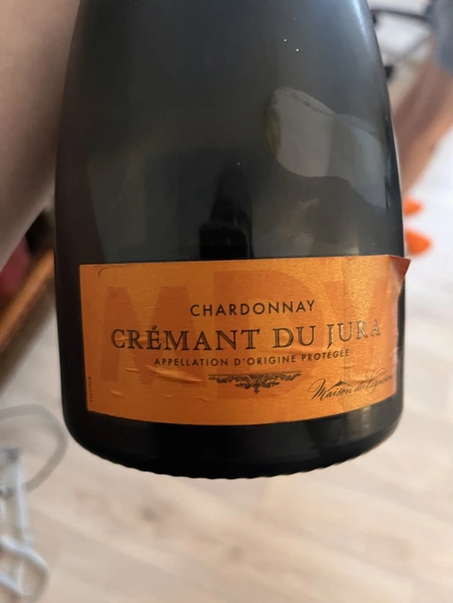

- Type
- White Sparkling, Brut
- Producer
- Maison du Vigneron
- Vintage
- NV
- Location
- France, Crémant du Jura AOC
- Grapes
- Chardonnay
- Alcohol
- 12
- Sugar
- 11
- Price
- 450 UAH
- Cellar
- N/A
Ratings
2022-06-15 - 7.20
Decent straight-forward bubbles. No secrets, no surprises, just creamy and tasty. Lollipops, apples, crème brûlée, and cream soda. Friendly palate, good value.